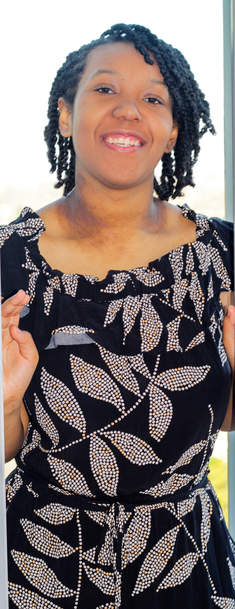
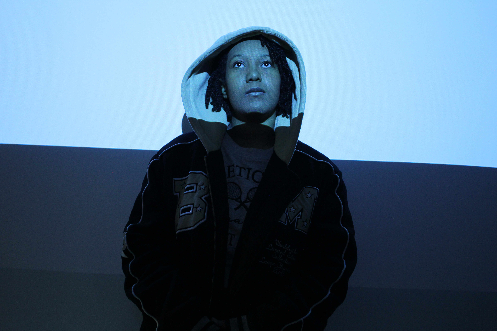
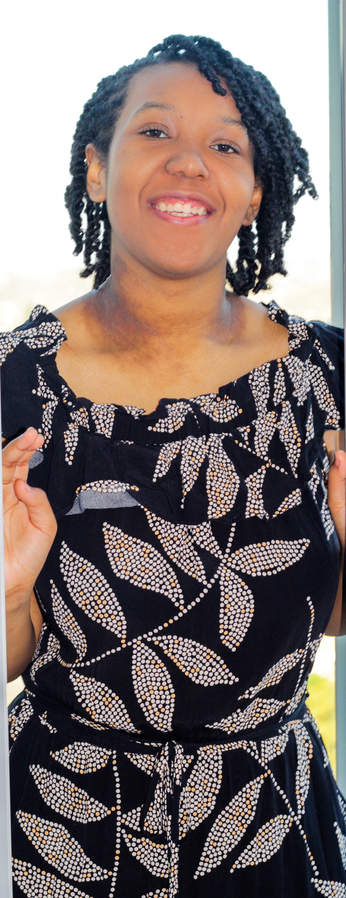
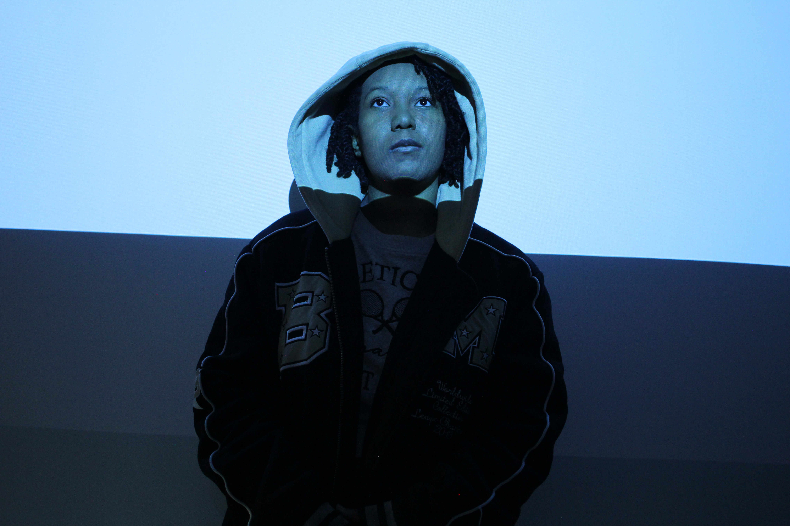

Relevance — D–1 (Lead Vocal)
Original music video created under tight time constraints in a Sony Music Project with Dee Digital.
A few projects across music, video and broadcasting. See individual case studies for full credits and process.
Original music video created under tight time constraints in a Sony Music Project with Dee Digital.
Collection of songs written, produced and performed by Marisa. Lighting, filming, directing, set design and editing in 5 days.
Interviews hosted and directed by Marisa and the music video ‘Relevance’ are featured on the DeeDigital Music channel.
Discussion on violence in drill and its influence on youth; featuring artists from D–1 on how ‘Relevance’ spreads a positive message.


 


